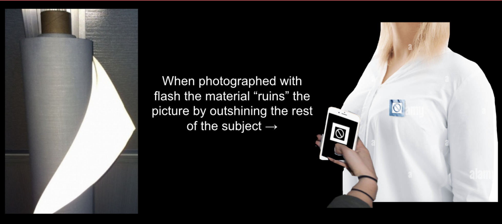
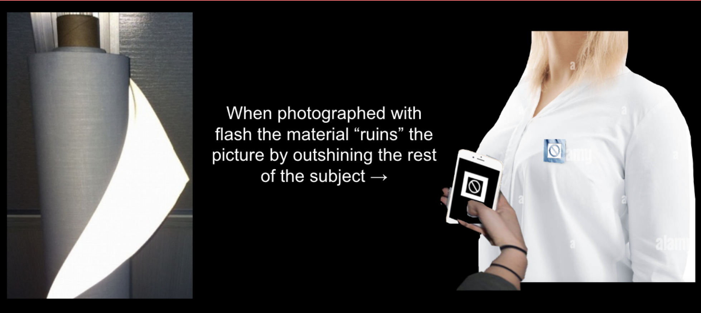
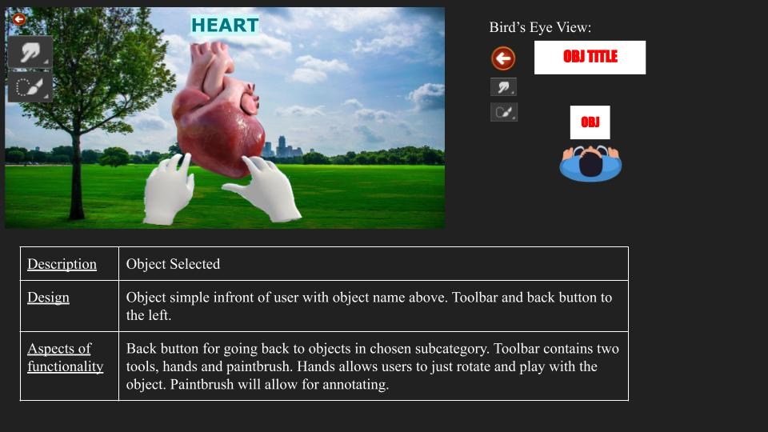
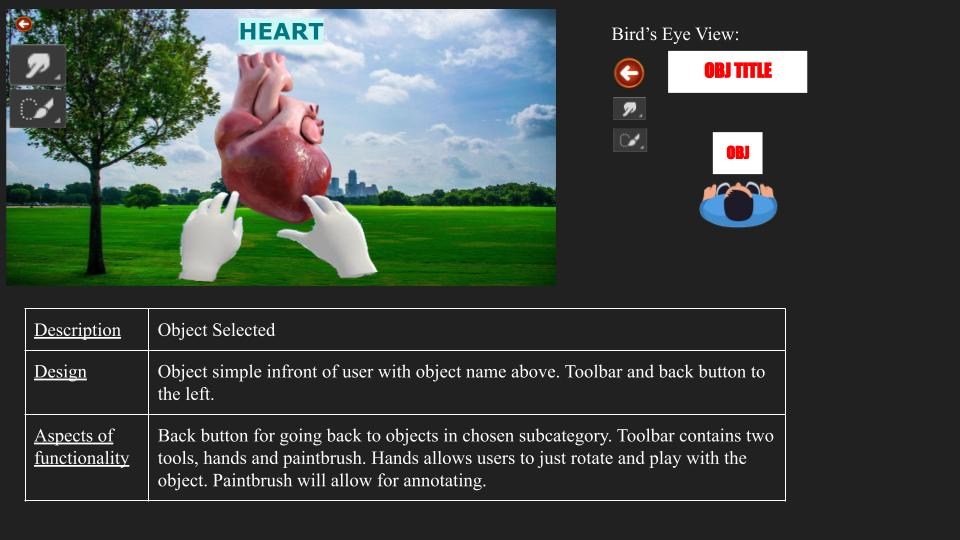

"Ready Companion" - Augmented Reality Campus Tour Guide App
As the lead software engineer behind "Ready Companion," I embarked on a journey to create an innovative augmented reality (AR) mobile application tailored for iPhone users. Tasked with translating a visionary concept into a functional reality, I closely collaborated with the startup's founder to bring this cutting-edge project to life.
"Ready Companion" is a pioneering campus tour guide application specifically designed to cater to the needs of college students. It harnesses the capabilities of Swift, RealityKit, and ARKit technologies to provide an immersive and interactive experience. By blending augmented reality with cutting-edge mobile technology, this app redefines the way students explore and interact with their campus surroundings.
This version of "Ready Companion" represents our initial iteration, but we are already working on the next evolution. Our team is currently exploring the incorporation of 3D assets into geolocked spaces, pushing the boundaries of AR experiences. We're delving into the application of advanced tools, including shader languages, to further enhance the app's visual and interactive elements. This next phase aims to provide users with an even more immersive and dynamic campus exploration experience, marking an exciting evolution in the project's ongoing development.


 



 
